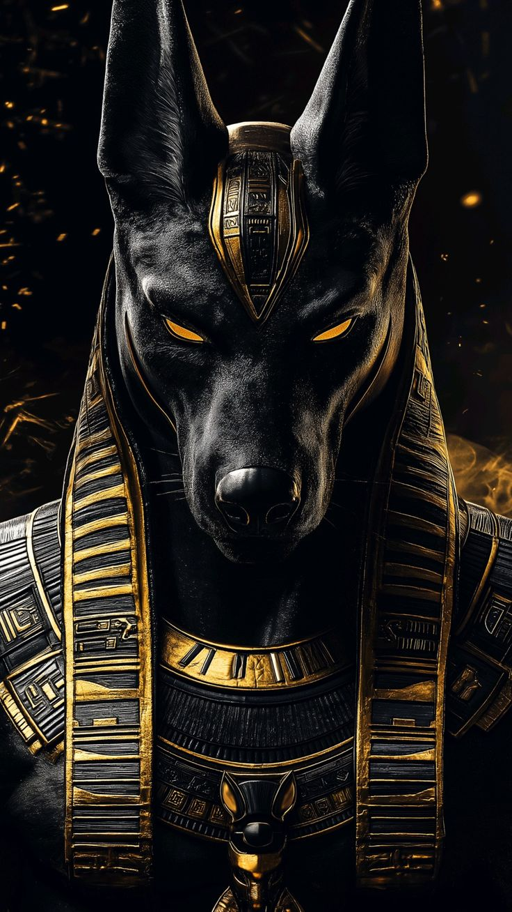

Anubis, le Gardien des Ténèbres
Dans l'obscurité silencieuse des nécropoles, entre les ombres des pyramides et le murmure du vent du désert, veille une divinité à la silhouette canine, gardienne des secrets les plus anciens de l'humanité. Anubis, le dieu à la tête de chacal, incarne l'énigme même de la mort dans l'Égypte antique. Bien plus qu'une simple divinité funéraire, il est le passeur d'âmes, l'inventeur des rites sacrés, et le juge implacable qui décide du destin éternel des morts.
Publié le 15 janvier 2024